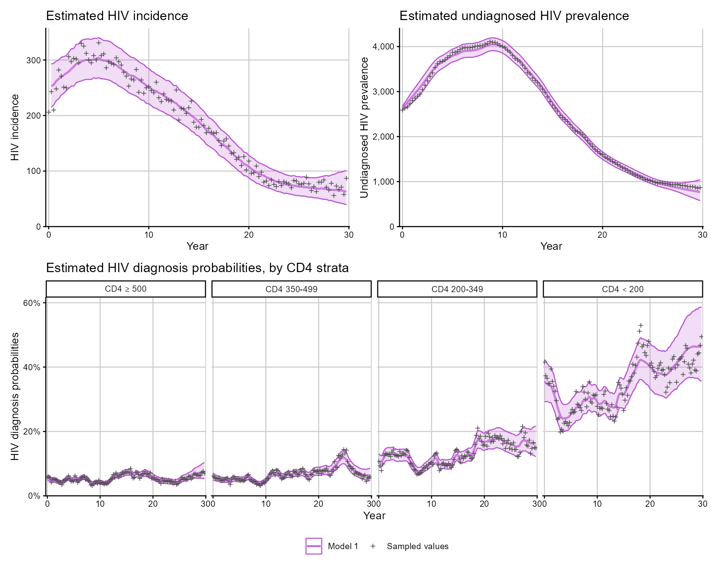
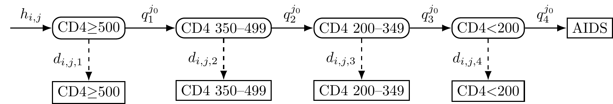
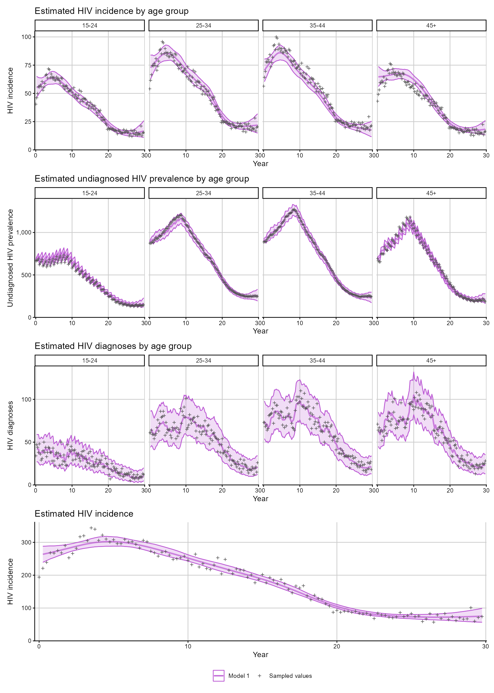
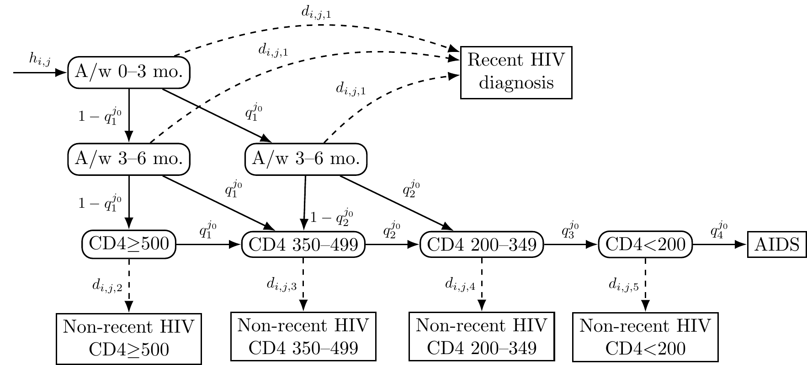
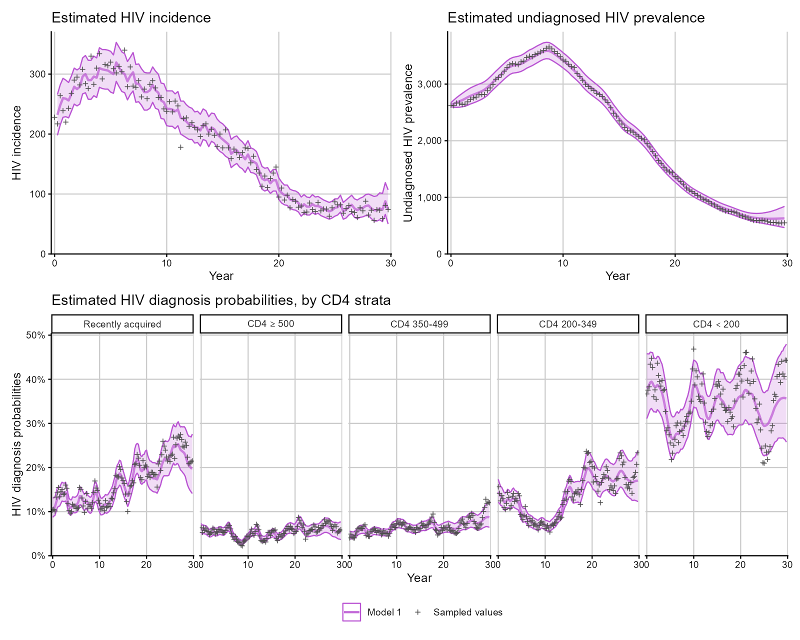
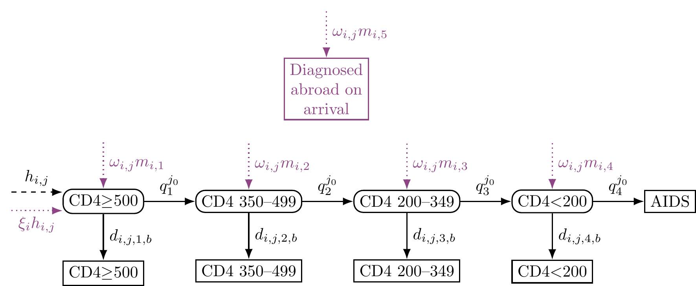
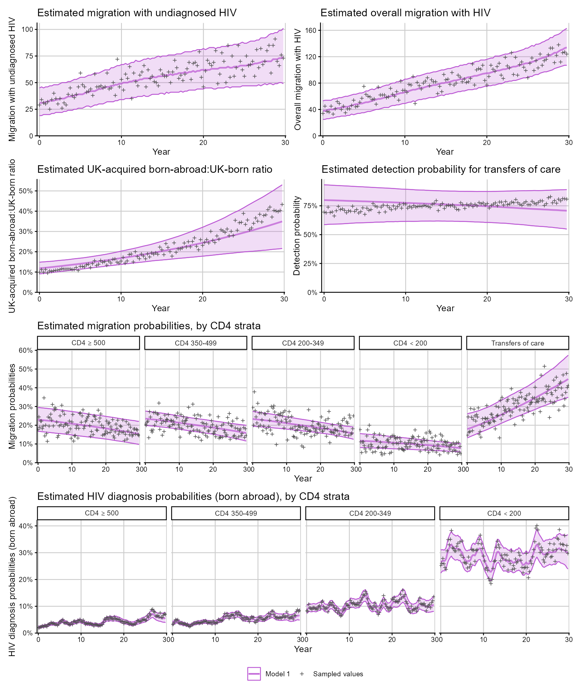
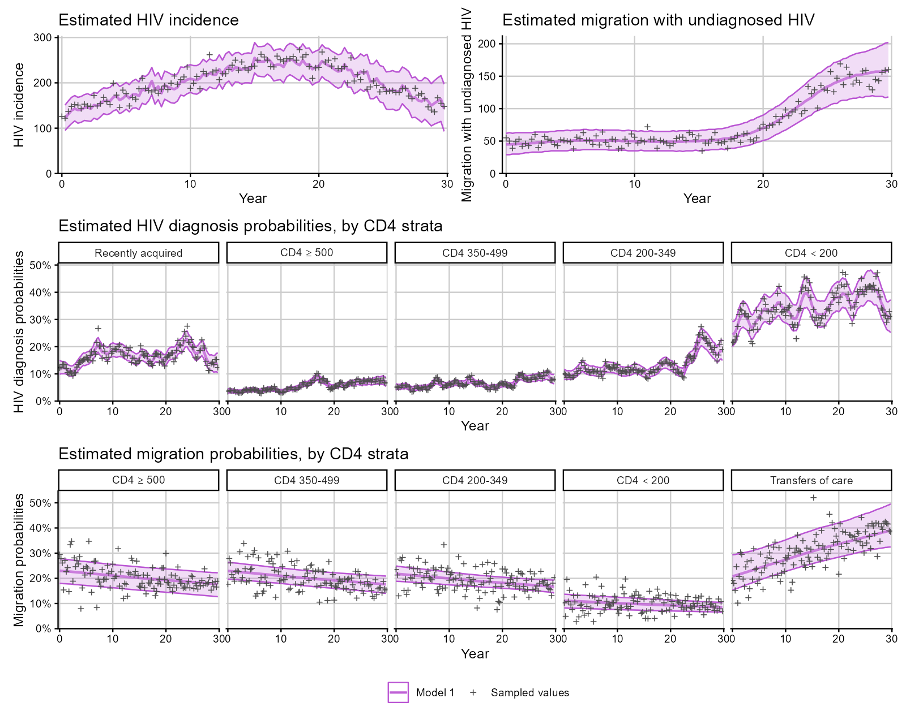

The cd4backcalc package supports eight model
configurations combining CD4-only or CD4 + RITA data, with or without
migration, and age-independent or age-dependent structures. This article
shows the main arguments used to simulate and fit each family of model,
and highlights the outputs available for each combination.
Supported models
| Model | Age-independent | Age-dependent |
|---|---|---|
| CD4 | rita=FALSE, migration=FALSE, age=FALSE |
rita=FALSE, migration=FALSE, age=TRUE |
| CD4 + RITA | rita=TRUE, migration=FALSE, age=FALSE |
rita=TRUE, migration=FALSE, age=TRUE |
| CD4 + Migration | rita=FALSE, migration=TRUE, age=FALSE |
rita=FALSE, migration=TRUE, age=TRUE |
| CD4 + RITA + Migration | rita=TRUE, migration=TRUE, age=FALSE |
rita=TRUE, migration=TRUE, age=TRUE |
The rita, migration, and age
flags are passed to both simulate_diagnoses() and
run_backcalc(). When fitting to real data these flags are
passed to run_backcalc() only.
For the age-independent CD4-only model, run_backcalc()
also supports alternative smoothing families via inf_model
and diag_model. For incidence, inf_model
selects a spline (1), random walk (2), or
Gaussian process (3); for diagnosis probabilities,
diag_model selects a spline (1) or AR(1)
process (2). Models with migration, RITA, or age structure
currently use the spline incidence configuration
(inf_model = 1) and their model-specific diagnosis
process.
CD4-only model
The CD4-only, age-independent model uses CD4 count at diagnosis and known HIV progression probabilities to estimate incidence and undiagnosed prevalence, see Birrell et al. (2012).

Figure: CD4-staged back-calculation model. The model compartments represent undiagnosed HIV (round boxes) and diagnosed HIV or AIDS (square boxes); the arrow represents HIV acquired at each time point (); HIV progression probabilities () vary by CD4 stratum; HIV diagnosis probabilities () vary by CD4 stratum and time.
This model can be fitted with:
sim_cd4 <- simulate_diagnoses(sim_type = "combo_3")
fit_cd4 <- run_backcalc(sim_cd4)
# Plotting estimated quantities
p1 <- plot_estimates(fit_cd4, quantity = "incidence")
p2 <- plot_estimates(fit_cd4, quantity = "undiag_prev")
p3 <- plot_estimates(fit_cd4, quantity = "diag_prob")
(p1 + p2) / p3
Alternative smoothing choices for the incidence and diagnosis models
are available for the age-independent CD4-only model, supplied via
inf_model and diag_model:
fit_cd4_rw <- run_backcalc(
sim_cd4,
inf_model = 2, # 1 = spline, 2 = random walk, 3 = GP (incidence only)
diag_model = 2 # 1 = spline, 2 = AR(1)
)Age-dependent models
Age-dependent models stratify HIV incidence and prevalence by age group, see Brizzi et al. (2019). These models take substantially longer to fit due to the increased number of parameters. Checkpointing is available for fitting age-dependent models on resource-constrained systems — see Checkpointing.

Figure: Age-dependent CD4 back-calculation model with representing the current age-category and representing the age category at HIV acquisition.
sim_age <- simulate_diagnoses(sim_type = "combo_3", age = TRUE)
fit_age <- run_backcalc(sim_age)
# age-specific outputs
p1 <- plot_estimates(fit_age, quantity = "incidence_age")
p2 <- plot_estimates(fit_age, quantity = "undiag_prev_age")
p3 <- plot_estimates(fit_age, quantity = "diagnoses_age")
# aggregate estimates are also available
p4 <- plot_estimates(fit_age, quantity = "incidence")
p1 / p2 / p3 / p4
Adding RITA evidence
Evidence from RITA (Recent Infection Testing Algorithm) testing can provide additional information on recent HIV acquisition, improving the precision of incidence and undiagnosed prevalence estimates, particularly for recent time periods and in populations with a high proportion of recent diagnoses. Both the age-independent and age-dependent models can be extended to include RITA evidence, see Kirwan et al. (2026).

Figure: Dual biomarker back-calculation model with recent incidence assay and non-recent incidence assay CD4-staged states. A/w = Acquired within, mo. = months.
sim_rita <- simulate_diagnoses(sim_type = "combo_3", rita = TRUE)
fit_rita <- run_backcalc(sim_rita)
p1 <- plot_estimates(fit_rita, quantity = "incidence")
p2 <- plot_estimates(fit_rita, quantity = "undiag_prev")
p3 <- plot_estimates(fit_rita, quantity = "diag_prob")
(p1 + p2) / p3
Migration-adjusted models
The migration-adjusted model uses information on country of birth to distinguish between HIV acquired in the UK and abroad, and estimate trends in migration. Both the age-independent and age-dependent models can be extended to include migration transitions, as well as models with RITA evidence, see Kirwan et al. (2026).
Migration models can optionally use an independent rolling-annual
migration index to inform the shape of total migration with HIV. Supply
its logged values in gamma_obs and set
gamma_obs_sd > 0; the free offset leaves the absolute
level to be identified by the HIV surveillance data. Age-independent
models use only this overall series. Age-dependent models can
additionally use grouped observations through
gamma_obs_group. The index must be independent of the HIV,
AIDS, CD4, and previous-diagnosis counts in the model likelihood.

Migration-adjusted CD4-staged back-calculation model. Solid lines indicate HIV progression and transition from latent to diagnosed states; dashed line is HIV acquisition among individuals born in the UK, dotted lines are HIV acquisition or migration arrivals among individuals born abroad.
sim_mig <- simulate_diagnoses(sim_type = "combo_3", migration = TRUE)
fit_mig <- run_backcalc(sim_mig)
# migration-specific outputs
p1 <- plot_estimates(fit_mig, quantity = "undiag_migration")
p2 <- plot_estimates(fit_mig, quantity = "all_migration")
p3 <- plot_estimates(fit_mig, quantity = "ratio_abroad_uk")
p4 <- plot_estimates(fit_mig, quantity = "detect_prob")
p5 <- plot_estimates(fit_mig, quantity = "migration_prob")
p6 <- plot_estimates(fit_mig, quantity = "diag_prob_mig")
(p1 + p2) / (p3 + p4) / p5 / p6
Combined RITA + migration models
When both recent infection evidence and migration data are available, the same interface extends to the combined model:
sim_rita_mig <- simulate_diagnoses(
sim_type = "combo_4",
rita = TRUE,
migration = TRUE
)
fit_rita_mig <- run_backcalc(sim_rita_mig)
p1 <- plot_estimates(fit_rita_mig, quantity = "incidence")
p2 <- plot_estimates(fit_rita_mig, quantity = "undiag_migration")
p3 <- plot_estimates(fit_rita_mig, quantity = "diag_prob")
p4 <- plot_estimates(fit_rita_mig, quantity = "migration_prob")
(p1 + p2) / p3 / p4
To fit the corresponding age-dependent model, add
age = TRUE to both simulate_diagnoses() and
run_backcalc(). Age-specific outputs such as
undiag_migration_age and diag_prob_mig_age are
then available.
Remodelling data
If data was simulated with RITA evidence but you want to fit a
CD4-only model (e.g. for comparison), use sim_remodel() to
restructure the data:
# simulate with RITA
sim_rita <- simulate_diagnoses(sim_type = "combo_3", rita = TRUE)
# remodel to CD4-only format
sim_cd4 <- sim_remodel(sim_rita, rita = FALSE)
# fit as CD4-only model
fit_cd4 <- run_backcalc(sim_cd4, rita = FALSE)Simulation types
For reproducible simulation studies, pre-defined simulation types
combine multiple parameter patterns. These are specified via the
sim_type argument:
# combo_3: varying acquisition + step-change migration + varying diagnosis +
# increasing UK-acquired incidence ratio + varying migration probabilities +
# non-uniform age distribution
sim_c3 <- simulate_diagnoses(sim_type = "combo_3", migration = TRUE)
# combo_4: alternative incidence and migration patterns
sim_c4 <- simulate_diagnoses(sim_type = "combo_4", migration = TRUE)Available simulation types include: "constant",
"h_increasing", "h_varying",
"h_varying_2", "o_increasing",
"o_step_change_1", "o_step_change_2",
"d_varying", "p_increasing",
"m_differing", "m_varying", and
"combo_1" through "combo_4".
References
- Birrell PJ, Chadborn TR, Gill ON, Delpech VC, et al. (2012). Estimating trends in incidence, time-to-diagnosis and undiagnosed prevalence using a CD4-based Bayesian back-calculation. Stat. Commun. Infect. Dis. 4(1). doi: 10.1515/1948-4690.1055.
- Brizzi F, Birrell PJ, Plummer MT, Kirwan PD, et al. (2019). Extending Bayesian back-calculation to estimate age and time specific HIV incidence. Lifetime Data Anal. 25(4), pp.757-780. doi: 10.1007/s10985-019-09465-1.
- Kirwan PD, Presanis A, Birrell PJ, et al. (2026). Bayesian back-calculation for HIV incidence incorporating recency biomarkers and inward migration. (in press).